現在、大幅に作り直した新バージョンを開発中です。
運用環境構築
Yuimarl の運用環境を、Amazonが提供するAmazon Web Servicesのクラウド環境である「EC2」の仮想サーバー上に構築する方法について記述します。ここでは、EC2上でのOSとして、Linuxディストリビューションの１つであるUbuntu を使用します。
ここで記述する例は、以下の環境とします。他の環境に構築する場合は、適宜、読み換えてください。
| クラウド環境 | Amazon EC2 |
| OS | Ubuntu |
| Java開発環境 | JDK 1.8 |
| Java EE 7 アプリケーションサーバー | Payara |
| データベース | MySQL |
| ビルドツール | Apache Maven |
| SSH接続クライアント | Tera Term |
※ 以下の説明では、赤字の部分が入力する文字です。緑色の文字は説明で、入力しません。
- Tera Termのインストール
- Amazon EC2 仮想サーバーの構築
- Tera TermからのSSH接続
- SSL証明書の作成と登録
- MySQLのインストール
- Java開発・実行環境のインストール
- Payaraのインストール
- Yuimarlプロジェクトのセットアップ
- JDBCの設定
- Realmの設定
- アプリケーションのデプロイ
- Payara自動起動の設定
Tera Termのインストール
Tera Termは、Windows用のターミナルエミュレータです。Amazon EC2のサーバーにSSH（Secure Shell）で接続するために使用します。Tera Term以外のターミナルエミュレータでも可能ですが、その場合は、RSA暗号によるSSH接続に対応したものをお使いください。
- 次のTera Termのダウンロードサイトにアクセスします。
http://sourceforge.jp/projects/ttssh2/releases/ - ダウンロードの一覧から、最新版のexeファイルを選択してダウンロードします。（執筆時点では、「teraterm-4.91.exe」）
- ダウンロードしたファイルを実行して、Tera Termのインストールを行います。
「コンポーネントの選択」では、初期表示のままで「次へ」を押してください。
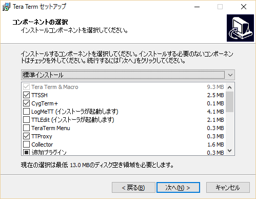
Amazon EC2 仮想サーバーの構築
Amazon Web ServicesのEC2で、仮想サーバーを作る方法を記述します。
- Amazonのアカウントを持っていなければ、以下の手順で作成します。
- Webブラウザで、Amazon Web Services のアドレスにアクセスします。
https://aws.amazon.com/jp/ - 「サインアップ」ボタンを押します。
- 「Eメールまたは携帯番号:」を入力し、「私は新規ユーザーです。」をチェックし、「サインイン」ボタンを押します。
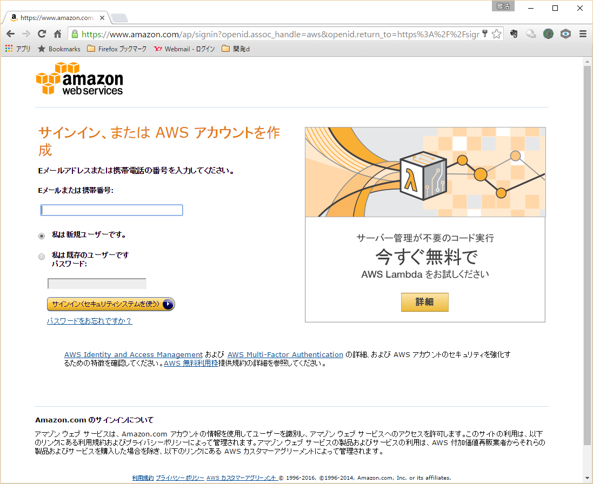 - 「ログイン認証情報」画面で名前、メールアドレス、パスワードを入力します。
- 「連絡先情報」画面で連絡先情報を入力します。
- 「支払情報」画面で支払情報を入力します。
- Webブラウザで、Amazon Web Services のアドレスにアクセスします。
- Amazon Web Services のページで、「コンソールへサインイン」ボタンを押します。
https://aws.amazon.com/jp/ - サインイン画面でメールアドレスとパスワードを入力してサインインします。
- AWSマネジメントコンソール画面で、「EC2」をクリックします。
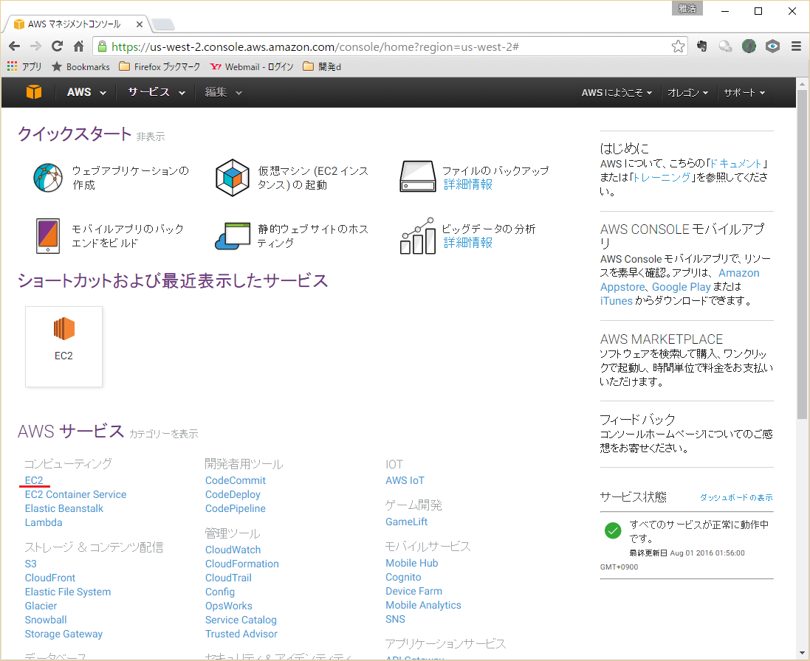 - 「EC2ダッシュボード」画面で「インスタンスの作成」ボタンを押します。
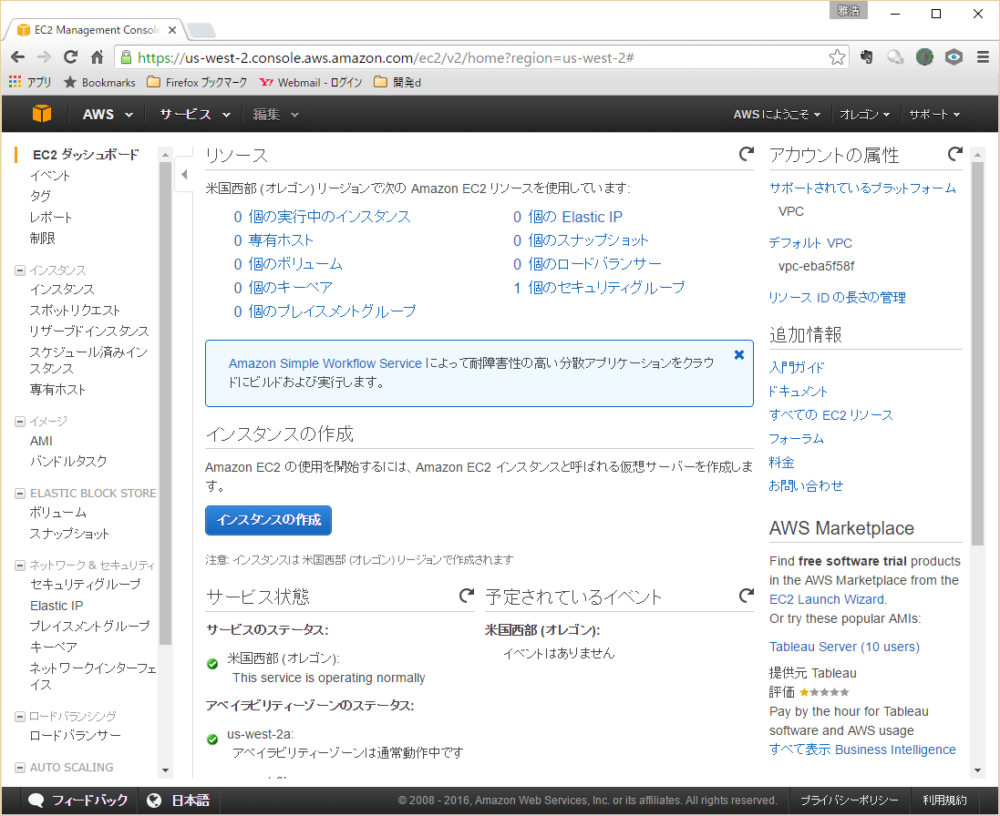 - 「ステップ 1: Amazon マシンイメージ（AMI）」画面で「Ubuntu Server 14.04 LTS (HVM), SSD Volume Type」の「選択」ボタンを押します。
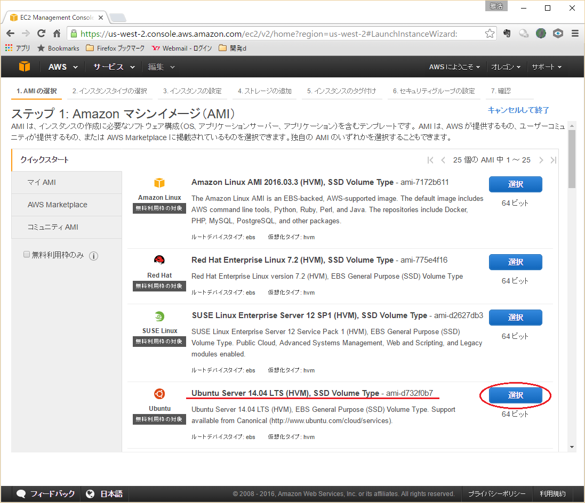 - 「ステップ 2: インスタンスタイプの選択」画面で、初期状態のまま、「確認と作成」ボタンを押します。
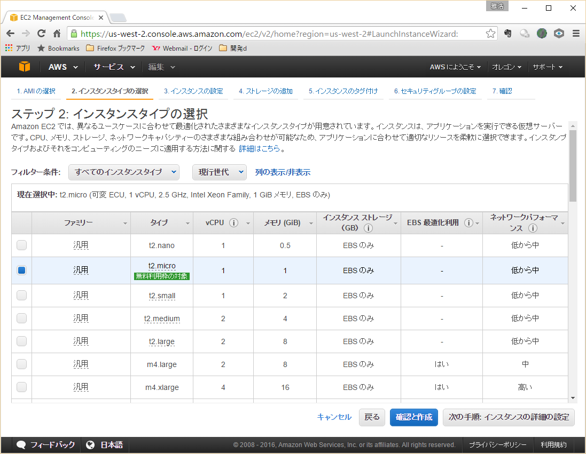 - 「ステップ 7: インスタンス作成の確認」画面で、「セキュリティグループの編集」をクリックします。
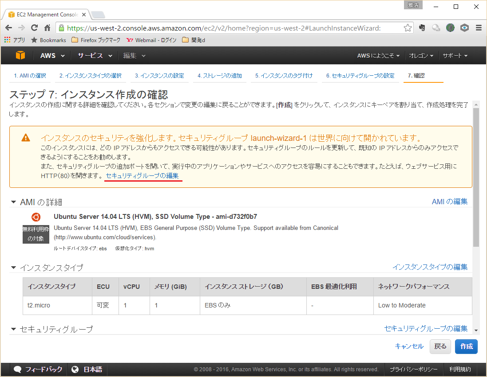 - 「ステップ 6: セキュリティグループの設定」画面で、「HTTP」、「HTTPS」、「カスタムTCPルール」（ポート範囲：8080）、「SSH」を追加します。（「送信元」は「任意の場所」を選択）
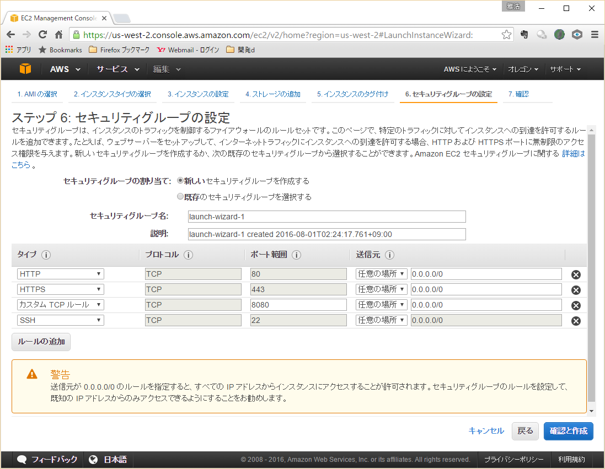
「確認と作成」ボタンを押します。 - 「ステップ 7: インスタンス作成の確認」画面で、「作成」ボタンを押します。
- 「既存のキーペアを選択するか、新しいキーペアを作成します。」画面で、「新しいキーペアの作成」を選択し、「キーペア名」を入力します。キーペアのファイルをダウンロードしてから、「インスタンスの作成」ボタンを押します。
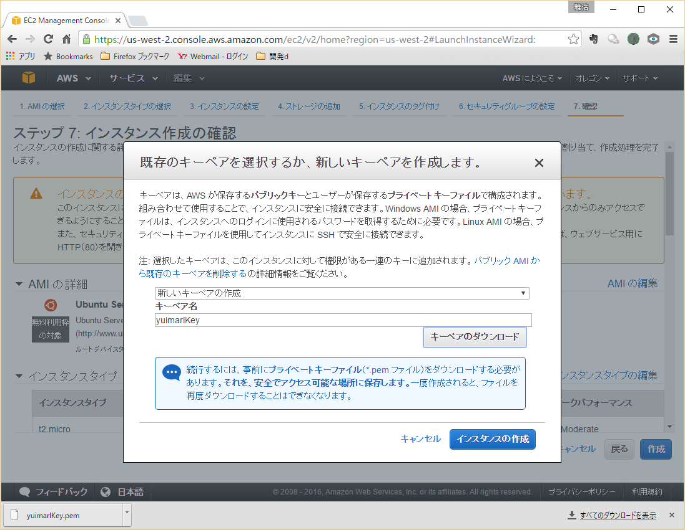 - 「作成ステータス」画面で、「インスタンスの表示」ボタンを押します。
- 「EC2ダッシュボード」画面で、表示された「パブリック IP」を確認してメモしておきます。
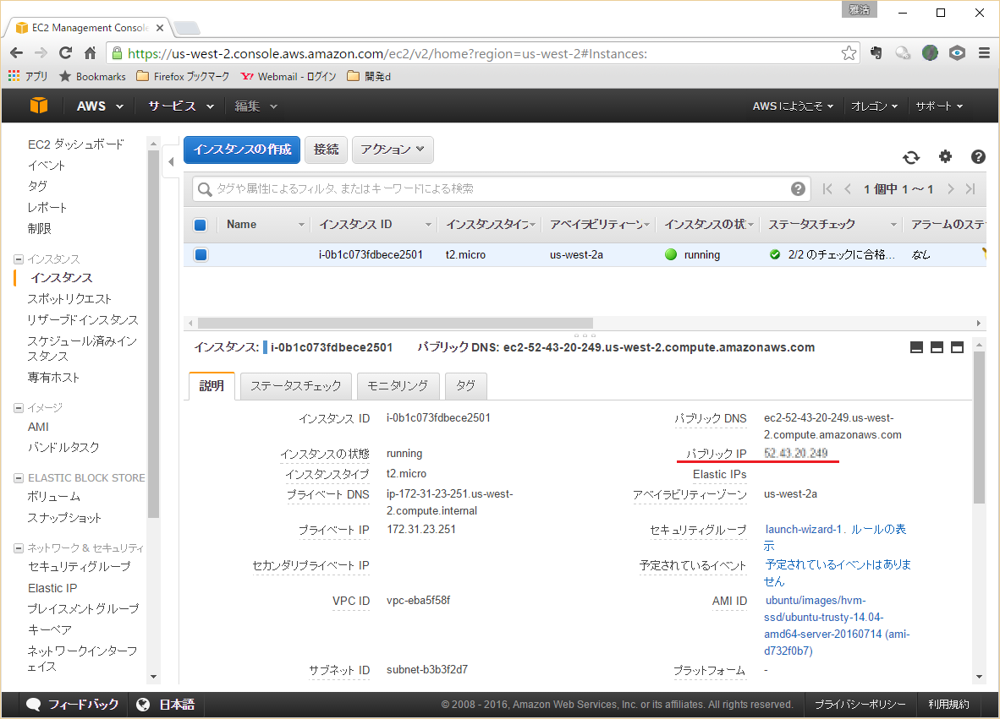
Tera TermからのSSH接続
- Tera Termを起動します。
- 「新しい接続」画面で、「ホスト」欄に、Amazon EC2のインスタンスのパブリックIPを入力します。
「OK」ボタンを押します。
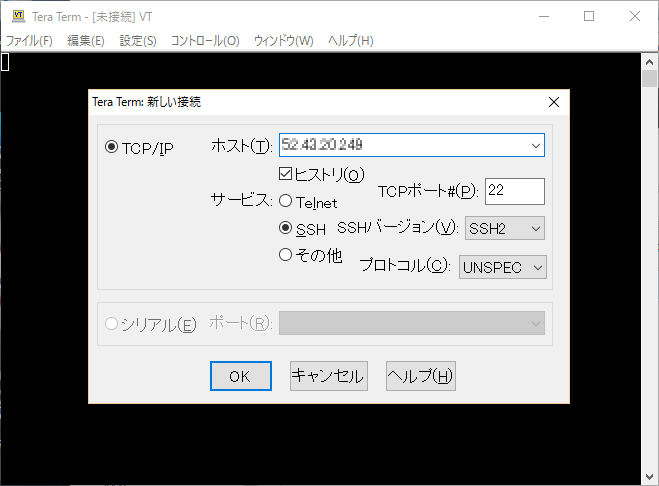 - 「セキュリティ警告」画面が表示されたら、「続行」ボタンを押します。
- 「SSH認証」画面で、「RSA/DSA/ECDSA/ED25519鍵を使う」をチェックし、「秘密鍵」ボタンを押して、上記でダウンロードしたキーペアのファイルを選択します。
「ユーザ名」に「ubuntu」と入力し、「パスフレーズ」は空のままで、「OK」ボタンを押します。
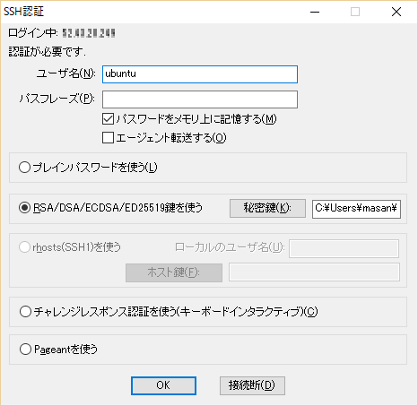 - ログインが成功し、Amazon EC2のターミナル画面が表示されます。
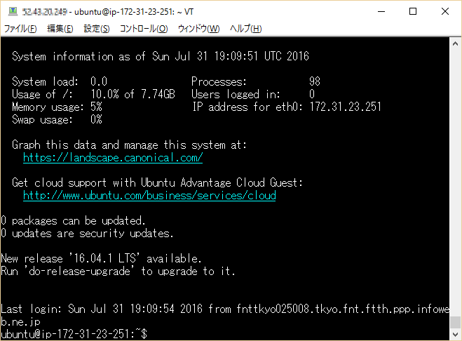 - 次のコマンドを入力して、Ubuntuの更新を適用します。
ubuntu@ip-172-31-23-251:~$sudo apt-get update
（省略）
Reading package lists... Done
ubuntu@ip-172-31-23-251:~$sudo apt-get -y upgrade
（省略）
ubuntu@ip-172-31-23-251:~$ - タイムゾーンの設定
- 次のコマンドを実行します。
ubuntu@ip-172-31-23-251:~$sudo dpkg-reconfigure tzdata
- 次の画面が表示されたら、リストから「Asia」を選択し、「Ok」ボタンを押します。
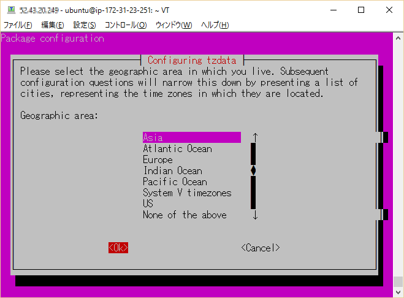 - 次の画面が表示されたら、リストから「Tokyo」を選択し、「Ok」ボタンを押します。
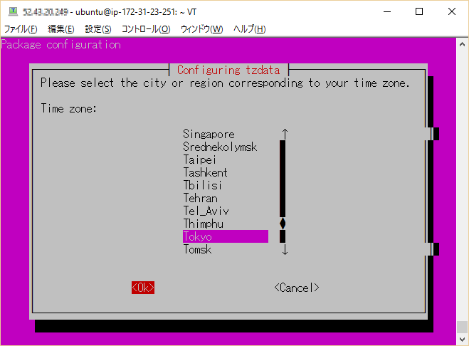 - dateコマンドを実行して、日本標準時(JST)で表示されることを確認します。
ubuntu@ip-172-31-23-251:~$date
- 次のコマンドを実行します。
- 日本語環境の設定
- 次のコマンドを実行します。
ubuntu@ip-172-31-23-251:~$export LANGUAGE=ja_JP.UTF-8
- 次のコマンドを実行して、「ja_JP.UTF-8」と表示されることを確認します。
ubuntu@ip-172-31-23-251:~$echo $LANGUAGE
ja_JP.UTF-8 - 次のコマンドを実行します。
ubuntu@ip-172-31-23-251:~$export LANG=ja_JP.UTF-8
- 次のコマンドを実行して、「ja_JP.UTF-8」と表示されることを確認します。
ubuntu@ip-172-31-23-251:~$echo $LANG
ja_JP.UTF-8 - 次のコマンドを実行します。
ubuntu@ip-172-31-23-251:~$export LC_ALL=ja_JP.UTF-8
- 次のコマンドを実行して、「ja_JP.UTF-8」と表示されることを確認します。
ubuntu@ip-172-31-23-251:~$echo $LC_ALL
ja_JP.UTF-8 - 次のコマンドを入力して、「.bashrc」ファイルをテキストエディタviで編集します。
ubuntu@ip-172-31-23-251:~$vi .bashrcファイルの末尾に次の３行を追加します。export LANGUAGE=ja_JP.UTF-8変更内容を保存して、viを終了します。
export LANG=ja_JP.UTF-8
export LC_ALL=ja_JP.UTF-8 - 次のコマンドを実行します。
ubuntu@ip-172-31-23-251:~$sudo locale-gen ja_JP.UTF-8
- 1度ログアウトして、再度ログインします
ubuntu@ip-172-31-23-251:~$logout
- 次のコマンドを実行します。
- 次のコマンドを入力します。
ubuntu@ip-172-31-23-251:~$ sudo apt-get -y install unzip make gcc apache2
SSL証明書の作成と登録
OpenSSLを使用して、SSL証明書を作成し、SSLによって接続するように設定します。
- Webブラウザで、次のアドレスにアクセスします。
http://www.openssl.org/source/
OpenSSLの「Tarballs」画面が表示されますので、その中から、「[LATEST]」と表示されているファイル名を確認します。（執筆時点では、「openssl-1.0.2h.tar.gz」） - Tera Termのターミナル画面で、次のコマンドを入力します。
ubuntu@ip-172-31-23-251:~$ sudo wget -P /usr/local/src http://www.openssl.org/source/openssl-1.0.2h.tar.gz←OpenSSLの[LATEST]のファイル名
ubuntu@ip-172-31-23-251:~$cd /usr/local/src
ubuntu@ip-172-31-23-251:/usr/local/src$ls -l
total 5152
-rw-r--r-- 1 root root 5274412 May 3 22:57 openssl-1.0.2h.tar.gz
ubuntu@ip-172-31-23-251:/usr/local/src$ sudo tar xzf openssl-1.0.2h.tar.gz
ubuntu@ip-172-31-23-251:/usr/local/src$ls -l
total 5156
drwxr-xr-x 20 root root 4096 Aug 2 02:06 openssl-1.0.2h
-rw-r--r-- 1 root root 5274412 May 3 22:57 openssl-1.0.2h.tar.gz
ubuntu@ip-172-31-23-251:/usr/local/src$ cd openssl-1.0.2h
ubuntu@ip-172-31-23-251:/usr/local/src/openssl-1.0.2h$sudo ./config --prefix=/usr/local
ubuntu@ip-172-31-23-251:/usr/local/src/openssl-1.0.2h$sudo make
ubuntu@ip-172-31-23-251:/usr/local/src/openssl-1.0.2h$echo $?
0 ←0なら成功です。0以外は失敗なのでやり直してください。
ubuntu@ip-172-31-23-251:/usr/local/src/openssl-1.0.2h$sudo make install
ubuntu@ip-172-31-23-251:/usr/local/src/openssl-1.0.2h$echo $?
0 ←0なら成功です。0以外は失敗なのでやり直してください。
ubuntu@ip-172-31-23-251:/usr/local/src/openssl-1.0.2h$sudo a2enmod ssl
ubuntu@ip-172-31-23-251:/usr/local/src/openssl-1.0.2h$sudo service apache2 restart
ubuntu@ip-172-31-23-251:/usr/local/src/openssl-1.0.2h$sudo mkdir /etc/apache2/ssl
ubuntu@ip-172-31-23-251:/usr/local/src/openssl-1.0.2h$cd /etc/apache2/ssl
ubuntu@ip-172-31-23-251:/etc/apache2/ssl$ sudo openssl req -x509 -nodes -days 366 -newkey rsa:2048 -keyout /etc/apache2/ssl/apache.key -out /etc/apache2/ssl/apache.crt
Country Name (2 letter code) [AU]:JP
State or Province Name (full name) [Some-State]:←都道府県名を入力（例：Tokyo）
Locality Name (eg, city) []:←市区町村名を入力（例：Chofu-shi）
Organization Name (eg, company) [Internet Widgits Pty Ltd]:←組織名を入力（例：BitFarm）
Organizational Unit Name (eg, section) []:←組織単位を入力（例：Manager）
Common Name (e.g. server FQDN or YOUR name) []:←FQDNを入力（例：yuimarl.jp）
Email Address []: ←メールアドレス（未入力でよい）
ubuntu@ip-172-31-23-251:/etc/apache2/ssl$ls -l
total 8
-rw-r--r-- 1 root root 1326 Aug 2 02:16 apache.crt
-rw-r--r-- 1 root root 1708 Aug 2 02:16 apache.key
ubuntu@ip-172-31-23-251:/etc/apache2/ssl$ cd /etc/apache2/sites-available
ubuntu@ip-172-31-23-251:/etc/apache2/sites-available$ls -l
total 12
-rw-r--r-- 1 root root 1332 Jan 7 2014 000-default.conf
-rw-r--r-- 1 root root 6437 Jan 7 2014 default-ssl.conf - テキストエディタviで「default-ssl.conf」を編集します。
ubuntu@ip-172-31-23-251:/etc/apache2/sites-available$sudo vi default-ssl.conf画面をスクロールして、次の行を探します。SSLCertificateFile/etc/ssl/certs/ssl-cert-snakeoil.pemこれらの行を次のように変更します。
SSLCertificateKeyFile/etc/ssl/private/ssl-cert-snakeoil.keySSLCertificateFile/etc/apache2/ssl/apache.crt変更内容を保存して、viを終了します。
SSLCertificateKeyFile/etc/apache2/ssl/apache.key - 次のコマンドを入力します。
ubuntu@ip-172-31-23-251:/etc/apache2/sites-available$sudo a2ensite default-ssl
Enabling site default-ssl.
To activate the new configuration, you need to run:
service apache2 reload
ubuntu@ip-172-31-23-251:/etc/apache2/sites-available$sudo service apache2 reload
Reloading web server config: apache2.
ubuntu@ip-172-31-23-251:/etc/apache2/sites-available$
MySQLのインストール
- 次のコマンドを実行します。
ubuntu@ip-172-31-23-251:~$ sudo apt-get install -y mysql-server
rootユーザーのパスワードを聞かれますので、パスワードを設定して、「<了解>」を押します。
ubuntu@ip-172-31-23-251:~$echo $?
0 ←0なら成功です。0以外は失敗なのでやり直してください。
ubuntu@ip-172-31-23-251:~$mysql -u root -p
Enter password: ←上記で設定したrootユーザーのパスワードを入力します。
Welcome to the MySQL monitor. Commands end with ; or \g.
Your MySQL connection id is 42
Server version: 5.5.50-0ubuntu0.14.04.1 (Ubuntu)
Copyright (c) 2000, 2016, Oracle and/or its affiliates. All rights reserved.
Oracle is a registered trademark of Oracle Corporation and/or its
affiliates. Other names may be trademarks of their respective
owners.
Type 'help;' or '\h' for help. Type '\c' to clear the current input statement.
mysql> create database yuimarl default character set 'utf8'; ←yuimarデータベースの作成。
Query OK, 1 row affected (0.00 sec)
mysql> create user yuimarluser identified by 'yuimarlpass'; ←yuimarlユーザーのID（yuimarluser）とパスワード（yuimarlpass）。 ※変更してもよいですが、その場合は、以下すべてそのように変更してください。
Query OK, 0 rows affected (0.00 sec)
mysql> grant all privileges on yuimarl.* to 'yuimarluser'@'%' with grant option;
Query OK, 0 rows affected (0.00 sec)
mysql> grant all privileges on yuimarl.* to 'yuimarluser'@'localhost' identified by 'yuimarlpass' with grant option;
Query OK, 0 rows affected (0.00 sec)
mysql>show databases;
+--------------------+
| Database |
+--------------------+
| information_schema |
| mysql |
| performance_schema |
| yuimarl |
+--------------------+
4 rows in set (0.00 sec)
mysql>quit
Bye
ubuntu@ip-172-31-23-251:~$ - テキストエディタviで「default-ssl.conf」を編集します。
ubuntu@ip-172-31-23-251:~$sudo vi /etc/mysql/mysql.conf.d/mysqld.cnf画面をスクロールして、次の行を探します。[mysqld]変更内容を保存して、viを終了します。
character-set-server=utf8 ←mysqldセクションの末尾に追加 - 次のコマンドを入力します。
ubuntu@ip-172-31-23-251:~$sudo service mysql restart
Java開発・実行環境のインストール
サーバーにJavaの開発・実行環境をインストールします。
- クライアントPCで、JDK8のダウンロードサイトにアクセスします。
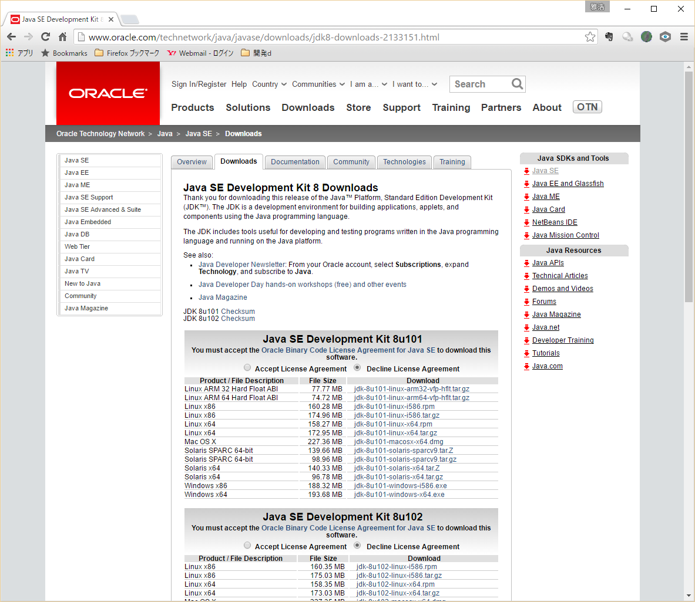 - 「Accept License Agreement」をチェックし、「Linux x64」で、拡張子が「.tar.gz」となっているファイル（この執筆時点では、「jdk-8u102-linux-x64.tar.gz」）のリンクをクリックしてダウンロードします。
- 以下の手順で、ダウンロードしたファイルを、Amazon EC2のサーバーに転送します。
- Tera Termで「ファイル」-「SSH SCP」を選択します。
- 「TTSSH」画面で、「From:」に上記でダウンロードしたファイルを選択します。
「Send」ボタンを押します。
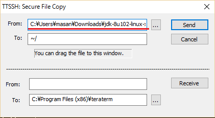 - ファイルが転送されたことを確認します。
ubuntu@ip-172-31-23-251:~$ls -l
total 177184
-rw-r--r-- 1 ubuntu ubuntu 181435897 Aug 2 03:05 jdk-8u102-linux-x64.tar.gz
ubuntu@ip-172-31-23-251:~$
- 以下のコマンドを実行します。
ubuntu@ip-172-31-23-251:~$sudo tar -zxf ./jdk-8u102-linux-x64.tar.gz -C /opt
ubuntu@ip-172-31-23-251:~$cd /opt
ubuntu@ip-172-31-23-251:/opt$ls -l
total 4
drwxr-xr-x 8 uucp 143 4096 Jun 23 10:56 jdk1.8.0_102
ubuntu@ip-172-31-23-251:/opt$export JAVA_HOME=/opt/jdk1.8.0_102
ubuntu@ip-172-31-23-251:/opt$ sudo update-alternatives --install /usr/bin/java java $JAVA_HOME/bin/java 20000
update-alternatives: /usr/bin/java (java) を提供するために 自動モード で /opt/jdk1.8.0_102/bin/java を使います
ubuntu@ip-172-31-23-251:/opt$ sudo update-alternatives --install /usr/bin/javac javac $JAVA_HOME/bin/javac 20000
update-alternatives: /usr/bin/javac (javac) を提供するために 自動モード で /opt/jdk1.8.0_102/bin/javac を使います
ubuntu@ip-172-31-23-251:/opt/java-oracle$ sudo update-alternatives --config java
リンクグループ java に 1 つの alternative のみがあります (/usr/bin/java が提供): /opt/jdk1.8.0_102/bin/java
設定は行いません。
ubuntu@ip-172-31-23-251:/opt$ java -version
java version "1.8.0_102" ←Javaのバージョンが表示されます。
Java(TM) SE Runtime Environment (build 1.8.0_102-b14)
Java HotSpot(TM) 64-Bit Server VM (build 25.102-b14, mixed mode)
ubuntu@ip-172-31-23-251:/opt$ - 次のコマンドを実行します。（Apache Mavenのインストール）
ubuntu@ip-172-31-23-251:~$ sudo apt-get -y install maven2
ubuntu@ip-172-31-23-251:~$mvn -v
Apache Maven 2.2.1 (rdebian-14) ←Apache Mavenのバージョンが表示されます。
Java version: 1.8.0_102
Java home: /opt/jdk1.8.0_102/jre
Default locale: en_US, platform encoding: UTF-8
OS name: "linux" version: "3.13.0-92-generic" arch: "amd64" Family: "unix"
ubuntu@ip-172-31-23-251:~$
Payaraのインストール
- クライアントPCで、Payara Serverのダウンロードサイトにアクセスします。
http://www.payara.fish/downloads
「Payara Server Full 162 Download」ボタンをクリックして、ダウンロードを実行します。
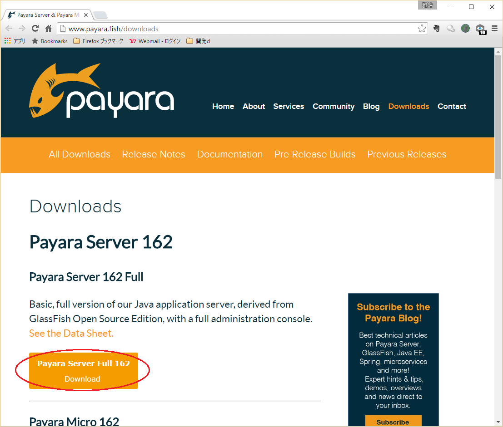 - 以下の手順で、ダウンロードしたファイルを、Amazon EC2のサーバーに転送します。
- Tera Termで「ファイル」-「SSH SCP」を選択します。
- 「TTSSH」画面で、「From:」に上記でダウンロードしたファイルを選択します。
「Send」ボタンを押します。
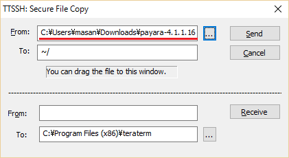 - ファイルが転送されたことを確認します。
ubuntu@ip-172-31-23-251:~$ls -l
total 118600
-rw-r--r-- 1 ubuntu ubuntu 121443419 8月 3 04:35 payara-4.1.1.162.zip
- 以下のコマンドを実行します。
ubuntu@ip-172-31-23-251:~$unzip payara-4.1.1.162.zip
ubuntu@ip-172-31-23-251:~$sudo mv payara41 /opt
ubuntu@ip-172-31-23-251:~$/opt/payara41/bin/asadmin start-domain←Payaraサーバーを起動します。
Waiting for domain1 to start ........
Successfully started the domain : domain1
domain Location: /opt/payara41/glassfish/domains/domain1
Log File: /opt/payara41/glassfish/domains/domain1/logs/server.log
Admin Port: 4848
Command start-domain executed successfully.
ubuntu@ip-172-31-23-251:~$ - 以下の手順で、TCPポート4848の通信が通るように設定します。
- Amazon EC2のコンソール画面で、「セキュリティグループ」の「インバウンド」タブを選択し、「編集」ボタンを押します。
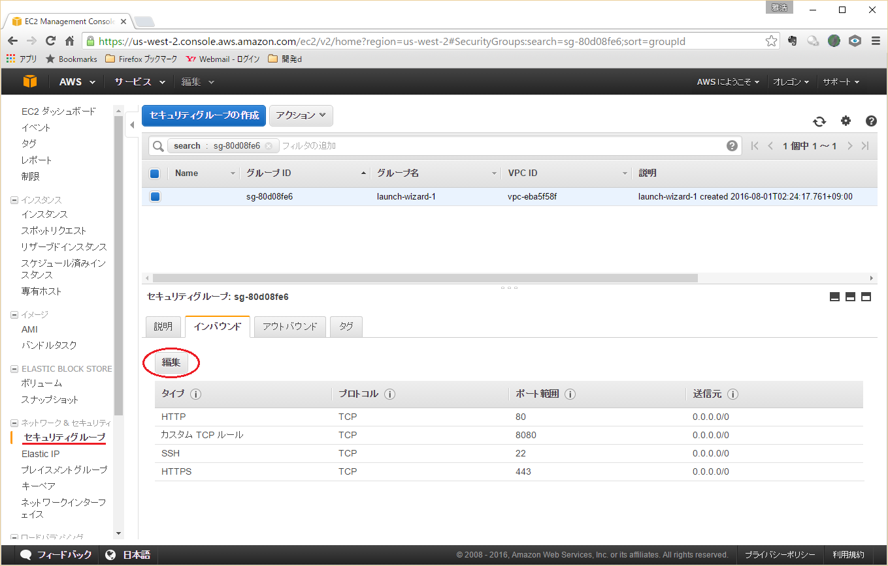 - 「インバウンドルールの編集」画面で、「ルールの追加」ボタンを押して、次の２行を追加します。
タイプ：「カスタム TCP ルール」、ポート範囲：「4848」、送信元：「任意の場所」
タイプ：「カスタム TCP ルール」、ポート範囲：「8181」、送信元：「任意の場所」
「保存」ボタンを押します。
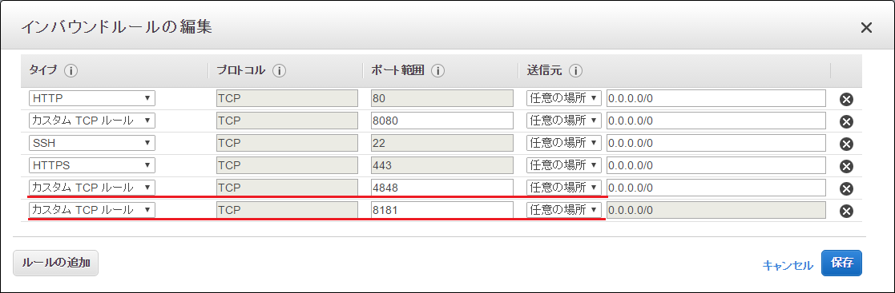
- Amazon EC2のコンソール画面で、「セキュリティグループ」の「インバウンド」タブを選択し、「編集」ボタンを押します。
- 以下のコマンドを実行します。
\nubuntu@ip-172-31-23-251:~$ ubuntu@ip-172-31-23-251:/opt/payara41/bin$ Enter admin user name [default: admin]> Enter the admin password> Enter the new admin password> Enter the new admin password again> Command change-admin-password executed successfully. ubuntu@ip-172-31-23-251:/opt/payara41/bin$ Enter admin user name [Enter to accept default]> Enter admin password> Login information relevant to admin user name [admin] for host [localhost] and admin port [4848] stored at [/home/T110Win7/.gfclient/pass] successfully. Make sure that this file remains protected. Information stored in this file will be used by administration commands to manage associated domain. Command login executed successfully. ubuntu@ip-172-31-23-251:/opt/payara41/bin$ You must restart all running servers for the change in secure admin to take effect. Command enable-secure-admin executed successfully. ubuntu@ip-172-31-23-251:/opt/payara41/bin$ Waiting for the domain to stop . Command stop-domain executed successfully. ubuntu@ip-172-31-23-251:/opt/payara41/bin$ Waiting for domain1 to start ........ Successfully started the domain : domain1 domain Location: /opt/payara41/glassfish/domains/domain1 Log File: /opt/payara41/glassfish/domains/domain1/logs/server.log Admin Port: 4848 Command start-domain executed successfully. ubuntu@ip-172-31-23-251:/opt/payara41/bin$
- WebブラウザでPayaraの管理コンソールにアクセスします。
https://(インスタンスのパブリックIP):4848/
プライバシーエラー画面が表示されますが、「(インスタンスのパブリックIP)にアクセスする （安全ではありません）」をクリックします。
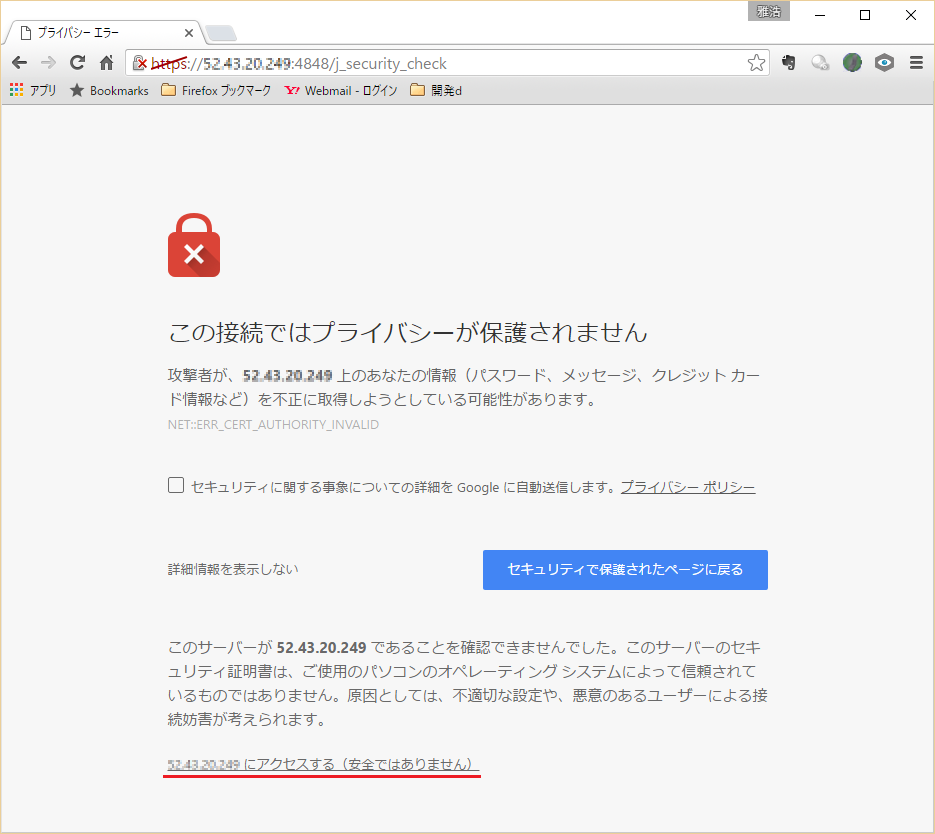 - Payaraの管理画面が表示しますので、上記で設定した「User Name」と「Password」を入力して、「Login」ボタンを押します。
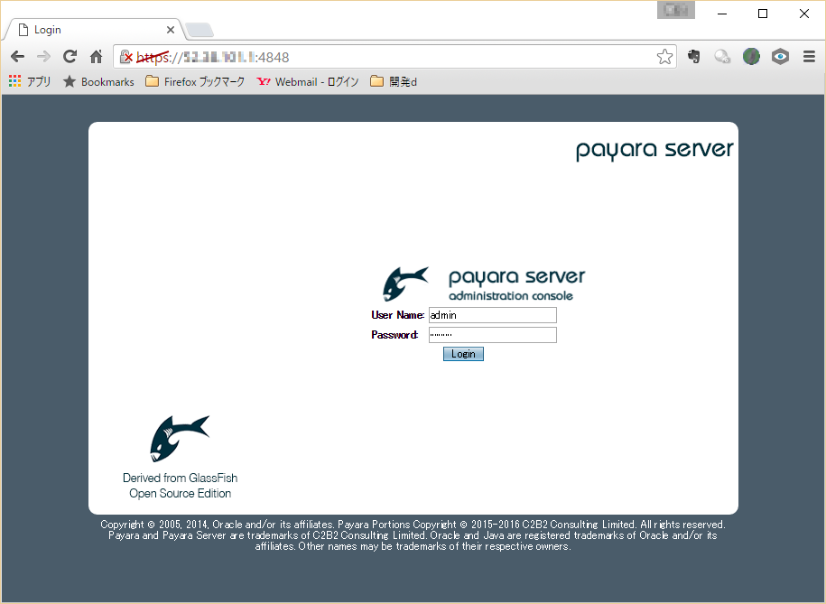 - Payaraコンソール画面が表示されます。
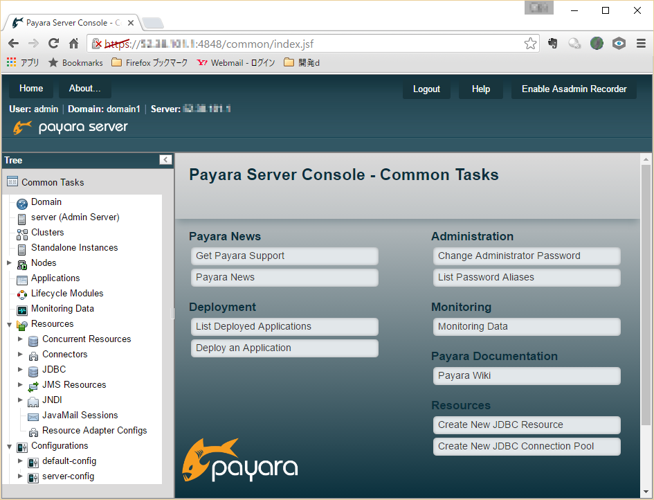
Yuimarlプロジェクトのセットアップ
Yuimarlプロジェクトのファイルをサーバーに転送し、ビルドとテーブルの作成を行います。
- ダウンロードページの内容に従って、Yuimarlプロジェクトファイルをダウンロードします。
- 以下の手順で、ダウンロードしたファイルを、GCEのサーバーに転送します。
- Tera Termで「ファイル」-「SSH SCP」を選択します。
- 「TTSSH」画面で、「From:」に上記でダウンロードしたファイルを選択します。
「Send」ボタンを押します。
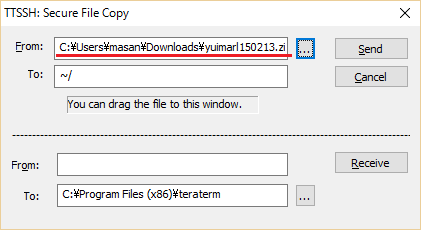 - ファイルが転送されたことを確認します。
ubuntu@ip-172-31-23-251:~$ls -l
total 2584
-rw-r--r-- 1 ubuntu ubuntu 2642864 Aug 2 07:15 yuimarl150213.zip
- 以下のコマンドを実行します。
\nubuntu@ip-172-31-23-251:~$ ubuntu@ip-172-31-23-251:~$ ubuntu@ip-172-31-23-251:~$ CLI306: Warning - The server located at /opt/payara41/glassfish/domains/domain1 is not running. Command stop-domain executed successfully. ubuntu@ip-172-31-23-251:~$ Waiting for domain1 to start ......... Successfully started the domain : domain1 domain Location: /opt/payara41/glassfish/domains/domain1 Log File: /opt/payara41/glassfish/domains/domain1/logs/server.log Admin Port: 4848 Command start-domain executed successfully. ubuntu@ip-172-31-23-251:~$ ubuntu@ip-172-31-23-251:~/yuimarl/yuimarl-db-mysql-setup$ build.xml lib pom.xml property sql xml ubuntu@ip-172-31-23-251:~/yuimarl/yuimarl-db-mysql-setup$ [INFO] ------------------------------------------------------------------------ [INFO] BUILD SUCCESSFUL [INFO] ------------------------------------------------------------------------ [INFO] Total time: 16 seconds [INFO] Finished at: Tue Aug 02 07:26:00 JST 2016 [INFO] Final Memory: 13M/33M [INFO] ------------------------------------------------------------------------ ubuntu@ip-172-31-23-251:~/yuimarl/yuimarl-db-mysql-setup$ Enter password: Welcome to the MySQL monitor. Commands end with ; or \g. Your MySQL connection id is 45 Server version: 5.5.50-0ubuntu0.14.04.1 (Ubuntu) Copyright (c) 2000, 2016, Oracle and/or its affiliates. All rights reserved. Oracle is a registered trademark of Oracle Corporation and/or its affiliates. Other names may be trademarks of their respective owners. Type 'help;' or '\h' for help. Type '\c' to clear the current input statement. mysql> Reading table information for completion of table and column names You can turn off this feature to get a quicker startup with -A Database changed mysql> +-------------------+ | Tables_in_yuimarl | +-------------------+ | EVENT | | EVENTSET | | EVENTVIEW | | EVENTVIEWSET | | EVENTVIEW_SPREAD | | GENERATED_ID | | GOODS_CATEGORY | | ORG_CATEGORY | | PARTY | | PARTY_RELATION | | PREFECTURE | | YUIMARL_USER | +-------------------+ 12 rows in set (0.00 sec) mysql> mysql> Bye ubuntu@ip-172-31-23-251:~/yuimarl/yuimarl-db-mysql-setup$
JDBCの設定
Payaraの管理画面で、MySQLデータベースに接続するためのJDBCの設定を行います。
- 上記の手順で、Payaraコンソール画面を表示します。
- 管理画面の左側のツリーから、「Resources」-「JDBC」-「JDBC Connection Pools」を選択します。
「JDBC Connection Pools」画面で「New」ボタンを押します。
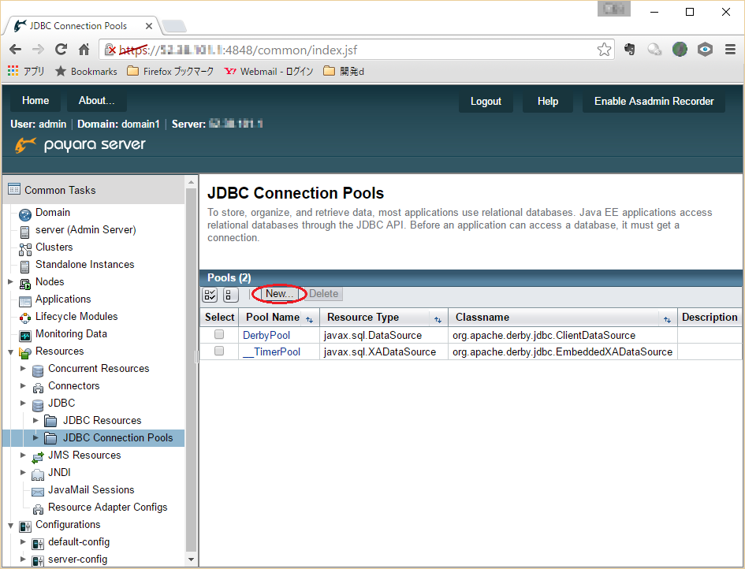 - 「New JDBC Connection Pool (Step 1 of 2)」画面で、次のように入力・選択します。
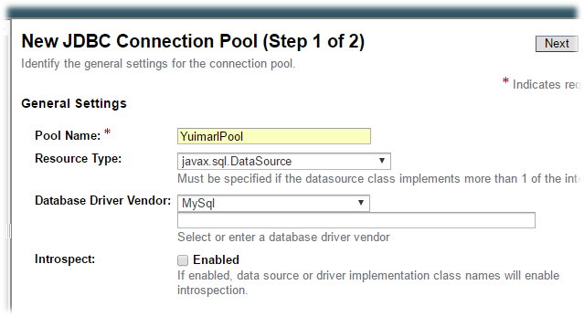名前 値 Pool Name YuimarlPool Resource Type javax.sql.DataSource Database Driver Vendor MySQL
「Next」ボタンを押します。 - 「New JDBC Connection Pool (Step 2 of 2)」画面の「Additional Properties」で、以下の値を設定します。（下記以外は変更しない）
名前 値 DatabaseName yuimarl Password yuimarlpass URL jdbc:mysql://localhost:3306/yuimarl?characterEncoding=utf8 Url jdbc:mysql://localhost:3306/yuimarl?characterEncoding=utf8 ServerName localhost User yuimarluser 
「Finish」ボタンを押します。 - 管理画面の左側のツリーから、「Resources」-「JDBC」-「JDBC Resources」を選択します。
「JDBC Resources」画面で「New」ボタンを押します。
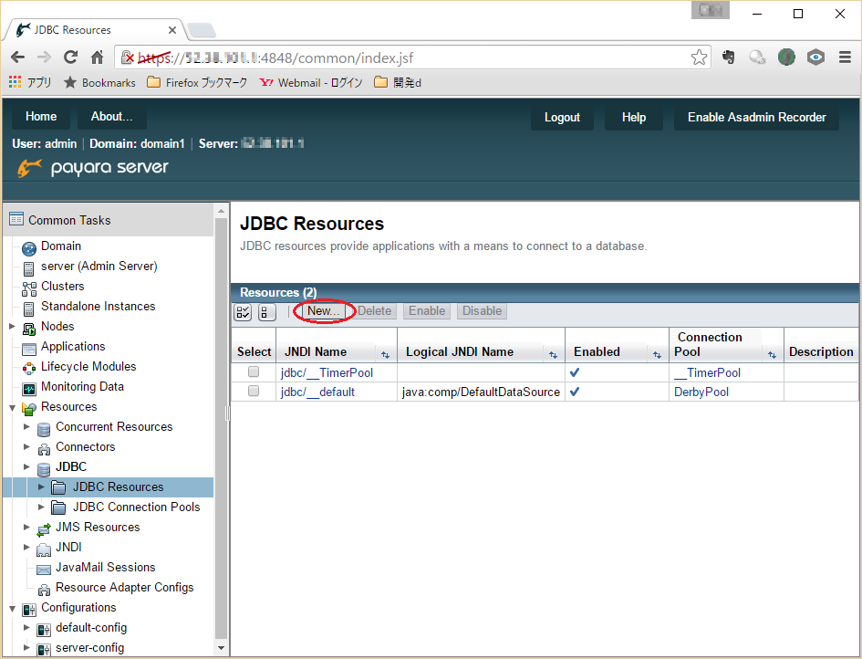 - 「新規JDBCリソース」画面で、次のように入力・選択します。
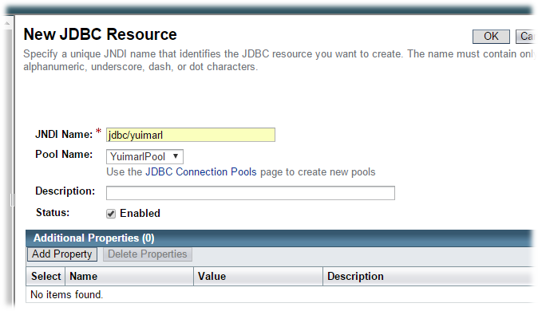名前 値 JNDI名 jdbc/yuimarl プール名 YuimarlPool
「OK」ボタンを押します。
Realmの設定
Payaraの管理画面で、ユーザー認証のための Realm（レルム）の設定を行います。
- 管理画面の左側のツリーから、「Configurations」-「server-config」-「Security」-「Realms」を選択します。
「Realms」画面で「New」ボタンを押します。
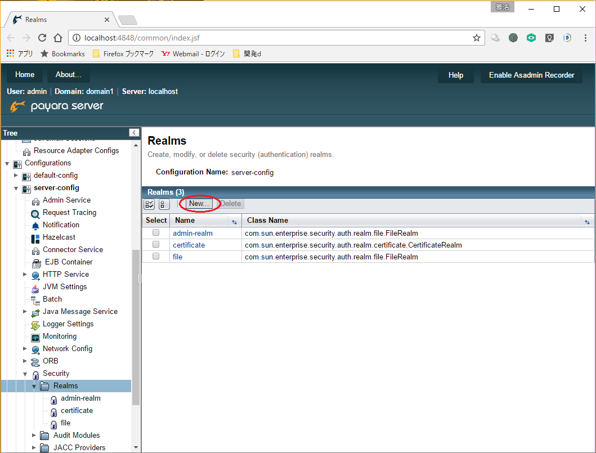 - 「New Realm」画面で、次のように入力・選択します。
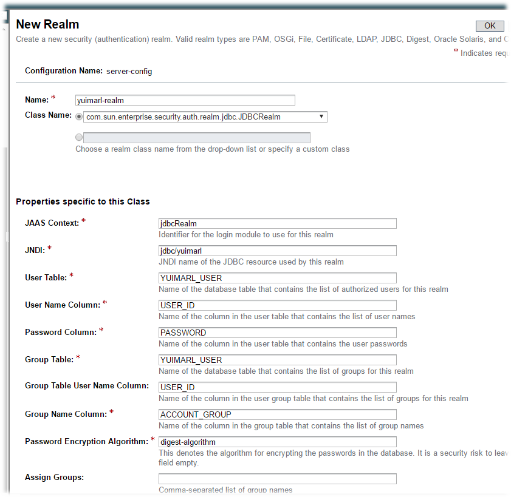名前 値 Name yuimarl-realm Class Name com.sun.enterprise.security.auth.realm.jdbc.JDBCRealm JAAS Context jdbcRealm JNDI jdbc/yuimarl User Table YUIMARL_USER User Name Column USER_ID Password Column PASSWORD Group Table YUIMARL_USER Group Table User Name Column USER_ID Group Name Column ACCOUNT_GROUP Password Encryption Algorithm digest-algorithm Digest Algorithm SHA-256 Encoding Hex
「OK」ボタンを押します。
アプリケーションのデプロイ
Yuimarlのプロジェクトをビルドしてから、Payaraの管理画面で、Yuimarl アプリケーションのデプロイ（配置）します。
- 以下のコマンドを実行します。
\nubuntu@ip-172-31-25-199:~$ ubuntu@ip-172-31-25-199:~/yuimarl/yuimarl-lib$ [INFO] ------------------------------------------------------------------------ [INFO] BUILD SUCCESSFUL [INFO] ------------------------------------------------------------------------ [INFO] Total time: 23 seconds [INFO] Finished at: Wed Aug 03 18:42:43 JST 2016 [INFO] Final Memory: 46M/110M [INFO] ------------------------------------------------------------------------ ubuntu@ip-172-31-25-199:~/yuimarl/yuimarl-lib$ ubuntu@ip-172-31-25-199:~/yuimarl/yuimarl-ejb$ [INFO] ------------------------------------------------------------------------ [INFO] BUILD SUCCESSFUL [INFO] ------------------------------------------------------------------------ [INFO] Total time: 18 seconds [INFO] Finished at: Wed Aug 03 18:44:46 JST 2016 [INFO] Final Memory: 30M/72M [INFO] ------------------------------------------------------------------------ ubuntu@ip-172-31-25-199:~/yuimarl/yuimarl-ejb$ ubuntu@ip-172-31-25-199:~/yuimarl/yuimarl-web$ [INFO] ------------------------------------------------------------------------ [INFO] BUILD SUCCESSFUL [INFO] ------------------------------------------------------------------------ [INFO] Total time: 11 seconds [INFO] Finished at: Wed Aug 03 18:46:45 JST 2016 [INFO] Final Memory: 31M/74M [INFO] ------------------------------------------------------------------------ ubuntu@ip-172-31-25-199:~/yuimarl/yuimarl-web$ ubuntu@ip-172-31-25-199:~/yuimarl/yuimarl-ear$ [INFO] ------------------------------------------------------------------------ [INFO] BUILD SUCCESSFUL [INFO] ------------------------------------------------------------------------ [INFO] Total time: 4 seconds [INFO] Finished at: Wed Aug 03 18:48:08 JST 2016 [INFO] Final Memory: 9M/23M [INFO] ------------------------------------------------------------------------ ubuntu@ip-172-31-25-199:~/yuimarl/yuimarl-ear$ total 21656 -rw-rw-r-- 1 ubuntu ubuntu 571 8月 3 18:48 application.xml drwxrwxr-x 2 ubuntu ubuntu 4096 8月 3 18:48 maven-archiver drwxrwxr-x 4 ubuntu ubuntu 4096 8月 3 18:48 yuimarl-ear-140829 -rw-rw-r-- 1 ubuntu ubuntu 22161180 8月 3 18:48 yuimarl-ear-140829.ear ubuntu@ip-172-31-25-199:~/yuimarl/yuimarl-ear$
- 管理画面の左側のツリーから、「Applications」を選択します。
「Applications」画面で「Deploy」ボタンを押します。
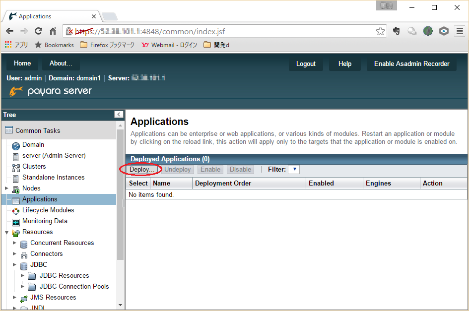 - 「Deploy Applications or Modules」画面で、以下の設定を行います。
- 「Local Packaged File or Directory That Is Accessible from Payara Server 」をチェックします。
- 「Browse Files」ボタンを押します。ファイル選択画面が表示されるので、「/home/ubuntu/yuimarl/yuimarl-ear/target/yuimarl-ear-(バージョン).ear」という EARファイル（エンタープライズアプリケーションリソースファイル）を選択して「Choose File」ボタンを押します。
- 以下の設定を行います。（それ以外はデフォルトのまま）
名前 値 Type Enterprise Application Application Name yuimarl-ear Virtual Servers server
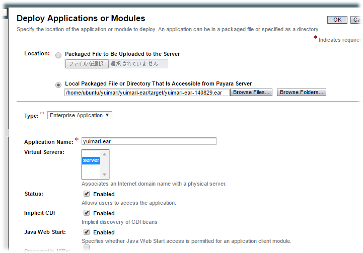
「OK」ボタンを押します。 - 「Applications」画面の一覧に「yuimarl-ear」が追加されれば、デプロイが完了しました。
- Webブラウザで、次のURLにアクセスします。
https://(インスタンスのパブリックIP):8181/yuimarl-web/
（SSLの警告メッセージが出ますが、そのまま続行してください。）
「ユーザーID」に「U00001」、「パスワード」に「test」と入力して、「ログイン」ボタンを押すと、「メインメニュー」画面が表示されます。
Payara自動起動の設定
OSが再起動された時に、Payaraが自動的に起動するように設定を行います。
- テキストエディタviで、「payara」という自動起動スクリプトを作成します。
ubuntu@ip-172-31-23-251:~$sudo vi /etc/init.d/payara次のように編集して保存します。
\n#!/bin/sh ### BEGIN INIT INFO # Provides: payara # Required-Start: $local_fs $remote_fs $network $syslog # Required-Stop: $local_fs $remote_fs $network $syslog # Default-Start: 2 3 4 5 # Default-Stop: S 0 1 6 # Short-Description: StartUP and Shutdown for Payara. # Description: Written by Masahiro Nitta ### END INIT INFO . /lib/lsb/init-functions export LANG=ja_JP.UTF-8 export LC_ALL=ja_JP.UTF-8 export JAVA_HOME=/opt/jdk1.8.0_102 export PATH=$PATH:$JAVA_HOME/bin export CLASSPATH=.:$JAVA_HOME/jre/lib:$JAVA_HOME/lib:$JAVA_HOME/lib/tools.jar case "$1" in start) /opt/payara41/bin/asadmin start-domain ;; restart|reload|force-reload) /opt/payara41/bin/asadmin restart-domain ;; stop) /opt/payara41/bin/asadmin stop-domain ;; *) ;; esac
- 次のコマンドを実行します。
ubuntu@ip-172-31-23-251:~$sudo chmod +x /etc/init.d/payara
ubuntu@ip-172-31-23-251:~$ sudo update-rc.d payara defaults 92 08 - 自動起動の確認を行うために、次のように再起動を行います。
ubuntu@ip-172-31-23-251:~$sudo shutdown -r nowしばらくしてからYuimarlにアクセスできれば設定が正常に行われました。